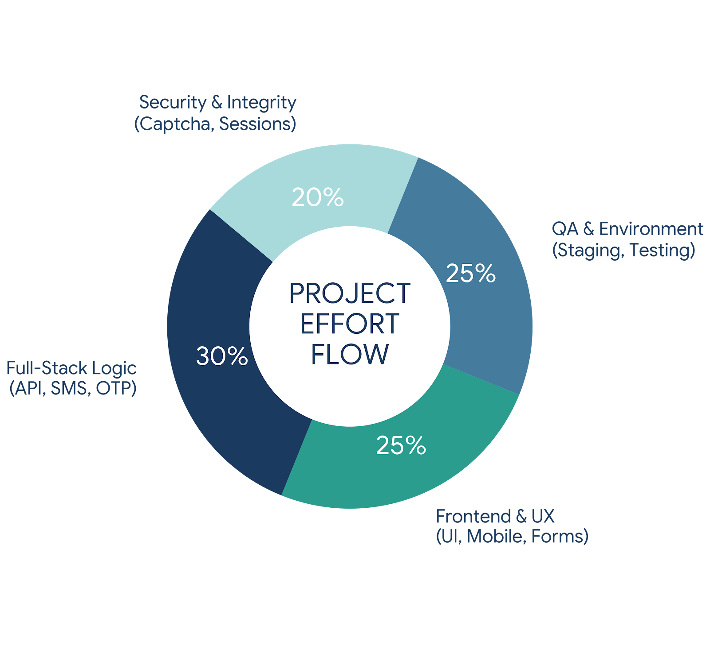

Diploma In Computer Science
Universiti Teknologi Mara
07/2013 - 03/2016
CGPA: 3.44
Senior Software Developer (Adobe Commerce)
Senior Developer with over 8 years of experience in PHP built e-commerce and government platforms. Experienced in Magento 2 commerce platform and Laravel framework, creating APIs for mobile apps, analytics integration and moving data from one system to another.

<li> items as needed — or delete any you don't need.git worktree
untuk create folder berasingan — boleh deploy dan continue kerja serentak.
git checkout staging
git worktree add ../project-deploy staging-adobe
cd .. && cd project-deploy
git fetch --all
git merge staging
git push origin-adobe staging-adobe:staging
git worktree remove ../project-deploy